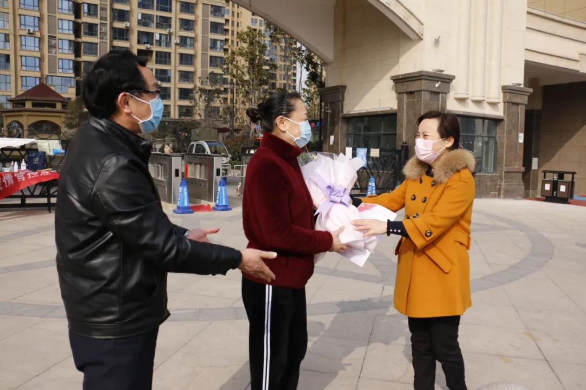

- 中共中央统一战线工作部
- 中共河南省委统战部
- 开封市统战部
- 河南大学
- "河大统战"杂志
河南大学统一战线抗疫情系列报道：加油抗疫，当好职工的“娘家人” 发布时间：2020-04-02 11:03:44 作者：河南大学第一附属医院 以高度责任心提“建议”防大疫 全力做好疫情防控服务保障 及时宣传报道疫情防先进事迹

高度关注扶贫战线疫情防控
自开展新冠肺炎防控工作以来，农工党河南大学委员会副主委、第一附属医院工会主席、院新冠肺炎防控领导小组副组长席子明高度重视疫情防控工作，主动担当，积极作为，充分发挥工会职能，做好职工的“娘家人”，汇聚起温暖的强大合力。

作为一名医生，席子明坚守在自己的工作岗位，为阻击疫情工作着；作为我院工会主席、农工党河南大学委员会副主委、政协开封市委员会常委，他在“建言献策”这条战线上也在为阻击疫情全力工作着。截止3月6日，他共向农工党河南省委、开封市政协递交了18份建议，均被采纳。
席子明递交的这些建议中，有《关于严惩或追责那些故意传播新型冠状病毒者的建议》《关于在刑法中增加“故意传播传染病和故意隐瞒传染病接触史犯罪”的建议》《关于在〈传染病防治法〉中强调“早、严、群”等的建议》等针对严格疫情防控期间法律实施的建议；有《关于新型冠状病毒疫情防控物资管理的建议》《关于修改〈关于加强预检分诊和发热门诊管理的补充通知〉的建议》《关于给抽调武汉一线防控人员发放慰问金的建议》《关于纠正小区封闭管理中花拳绣腿的建议》《关于新型冠状病毒肺炎重大信息由国家卫生健康委统一发布的建议》《关于疫情结束后给春节假期参加疫情防控人员一个“春假”的建议》等针对现阶段现有政策的建议；也有《关于新型冠状病毒肺炎病人密切接触者隔离空档期处置的建议》和《关于在疫情通报中将“死亡人数”改为“去世（病亡）例（人数）”的建议》的专业性建议。 针对不同的群体、政策，提出不同的建议，这些建议对疫情防控工作起到了非常重要的作用，前进报、人民日报市场网、人报融媒、河南大学网、开封统战网、农工党河南省委和开封市委网等媒体给予了报道。他始终在践行着“不忘初心”的誓言，也在诠释着一位工会人、一位政协委员和一位医生的担当和使命。

医院每天早上8点准时召开医院防控新型冠状病毒肺炎领导小组例会，他每天早晨7点就离开家；做好给武汉前线队员发放市总工会、校工会、省科教文卫体工会慰问金信息统计，接收开封市火电厂职工捐赠、接受中国人寿保险和华夏保险捐赠；给武汉前线医疗队发慰问信，元宵节、“三八”节、每周常态化慰问队员家属；组织职工参加河南大学工会组织的“携手克时艰，大爱你我他——我爱我家”作品征集活动；联系了两家企业为医院捐赠了酒精、艾卷、巴斯消毒液、护目镜、食品等；撰写向各级工会组织推荐疫情防控事迹20余份；主动到发热分检处、发热门诊等疫情防控部门了解职工的困难，并想法解决；给疫情防控一线职工请心理咨询师，联系郑大教育给疫情防控一线职工孩子进行心理、教育、作业辅导等。
向校工会网站、医院网站撰写新闻稿件10多篇，向省科教文卫体工会、校工会、市总工会、市科教文卫体工会撰写我院抗疫先进集体和先进个人事迹，对职工的先进事迹积极投稿，撰写了《抗击新型冠状病毒肺炎，一附院农工党员在行动》《人民的健康烙在心里植在骨子里》等文章，被很多媒体刊载。由院工会推荐，呼吸内科一病区被开封市总工会授予“五一”巾帼奖状，李莹被授予“五一”巾帼奖章；感染性疾病科被开封市妇联授予“三八”红旗集体，16名武汉医疗队女队员被授予“三八”红旗手；还向省总工会推荐了“‘工人先锋号’五一”劳动奖章人选；向市总工会推荐了“五一”劳动奖状、奖章、“工人先锋号”人选等。

2月7日上午，他踏着积雪、冒着严寒、一大早来到医院帮扶村，检查、督导疫情防控工作，提出了一些防控疫情的新思路。如：要求工作队在疫情防控中要忠于职守、严防严控、早防早控、群防群控、联防联控、稳防稳控，充分彰显守土有责、守土担责、守土负责。要按照党中央、习近平总书记的指示，要细中求细、严中求严、不讲情面、团结一心，守护好常庄村（帮扶村）1700多名父老乡亲的身体健康和生命安全。当得知村里有4名武汉回来人员的消息后，他详细询问了他们的隔离情况，有没有不适，和他们接触者有没有不适等。他叮嘱大家，在疫情防控上千万不能有一点麻痹，千万不能有丝毫大意，更不能有一丁点侥幸心理，要严防死守，坚决封闭村子，在党委政府的坚强领导下，为打赢疫情阻击战贡献我们常庄人的力量。此后，他多次到帮扶村督导扶贫和疫情防控工作。
“疫”散有终时，情牵无穷期！席子明还将持续密切关注疫情，广泛宣传普及抗疫知识，指导广大职工做好自身防护，进一步加大关心关爱力度，同广大职工一起坚定信心，共同打赢这场疫情防控狙击战！